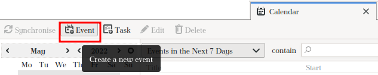
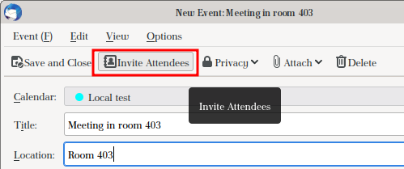
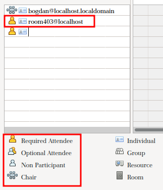
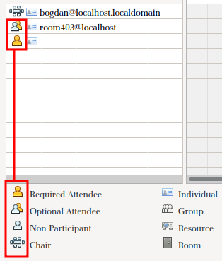
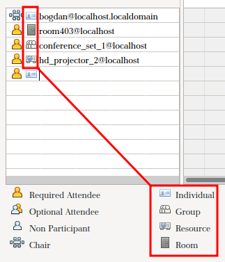
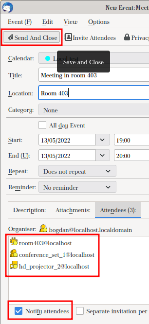
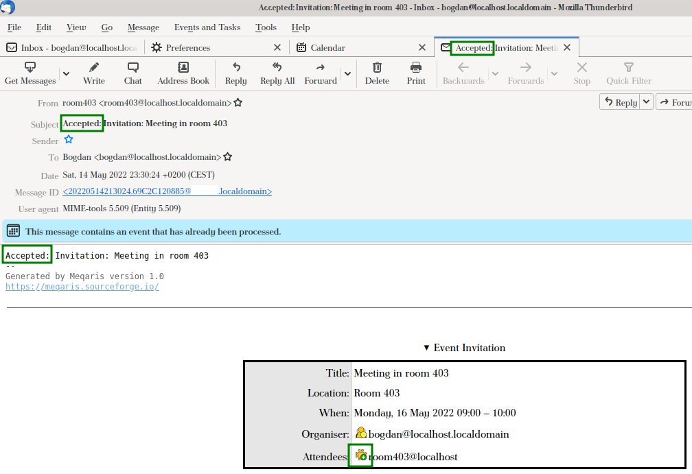
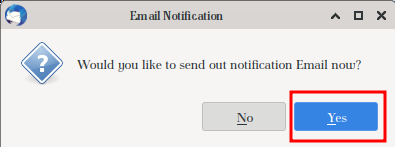

Meqaris (Meeting Equipment and Room Invitation System) is a system that allows booking resources using e-mail invitations.
It is a command-line-driven application for system administrators to operate. Users interact with Meqaris only by sending e-mail invitations to special e-mail addresses created by the system administrator.
Meqaris is NOT an e-mail client program.
Meqaris is NOT a plug-in, extension or other add-on to an e-mail client program.
Meqaris is NOT an e-mail server program.
Meqaris is a program that an e-mail server interacts with.
In this manual, I'm going to use the Mozilla Thunderbird mail client.
We begin by enabling the "Calendar" tab in Thunderbird. To do that, go to the "Events and Tasks" menu and click "Calendar" or press Ctrl+Shift+C. If you don't see the menu, upgrade your Thunderbird or install the "Lightning" add-on.
On the "Calendar" tab, click the "New event" button:

In the "New event" window, select the date and time, fill all the usual details of your meeting, and click the "Invite Attendees" button:

In the "Invite Attendees" window, type the e-mail addresses of the resources
you wish to use for your meeting. In the below example, it is a meeting room.
You should get the e-mail addresses from some kind of address book or from
your local Meqaris administrator.

You can choose one of the 3 following roles to book the resource: "Chair", "Required Attendee" or
"Optional Attendee", by clicking the first icon in the attendee's row.
If you choose "Non Participant", the resource will
NOT be booked and you will
NOT get a reply. Your invitation will simply
be ignored.

You can choose any of the 4 attendee types: "Individual", "Group", "Resource" or "Room", by clicking the second icon in the attendee's row. All types are supported by Meqaris.

Once all attendees are selected, click the "OK" button.
When all the meeting details are filled and participants selected, click the "Send And Close" button in the event window to send the invitations. Make sure that the "Notify attendees" check-box at the bottom is selected.

Now you can await responses from the resources you've booked.
A positive reply will have a green plus sign by the resource and the
word "Accepted" in the mail subject and body:

To cancel an event, right-click it in the "Calendar" tab in
Thunderbird and select "Delete Event" (or simply click the event
and press the Delete button).
In the "Email Notification" question window be sure to click "Yes"
so that Meqaris will receive the cancellation notice and will remove
the booking from its database. Otherwise, nobody will be able to book
that resource for a period covering any part of the cancelled event.

For troubleshooting, read the replies you get from Meqaris or the
mail server (in case of severe errors).
In the replies are not explanatory, refer to your local Meqaris administrator
to look in Meqaris logs or the logs of the mail server.